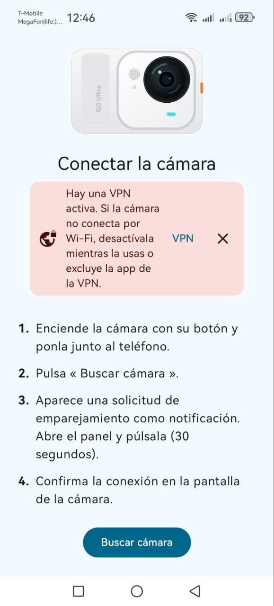
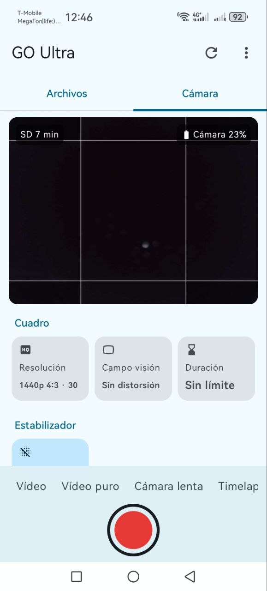
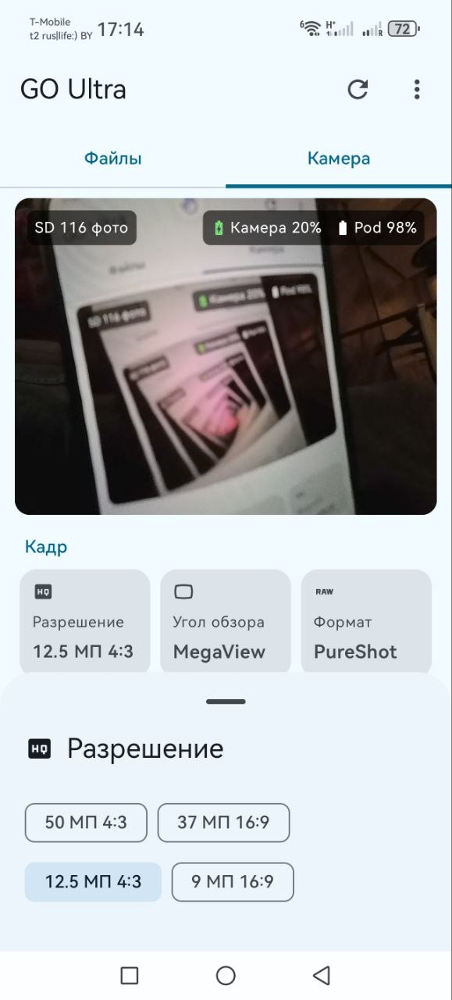
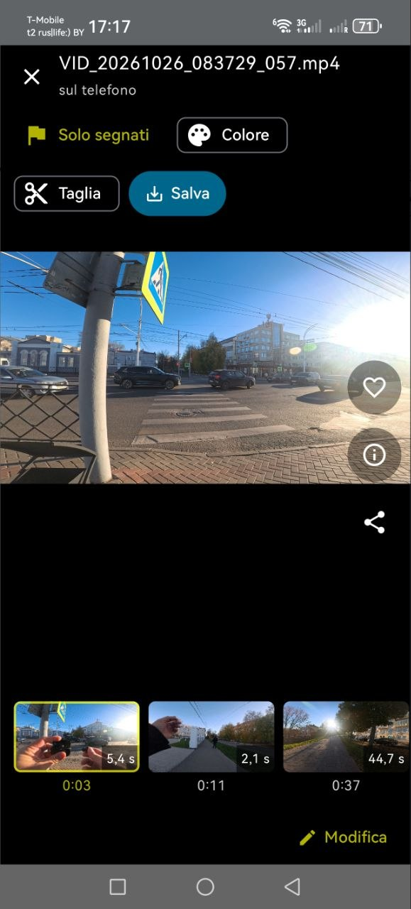
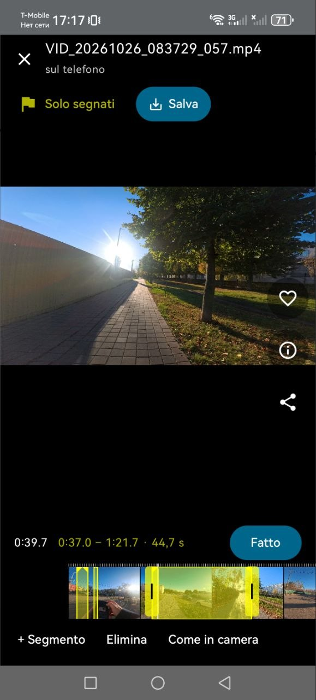
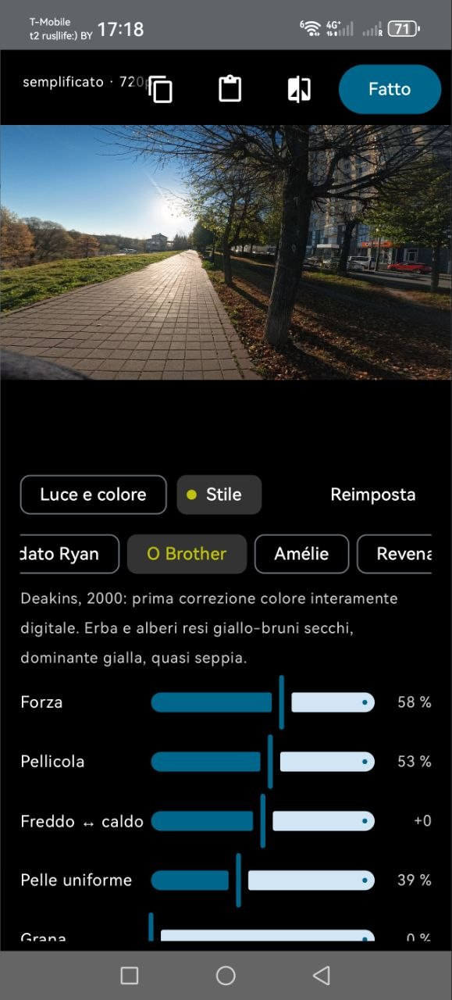
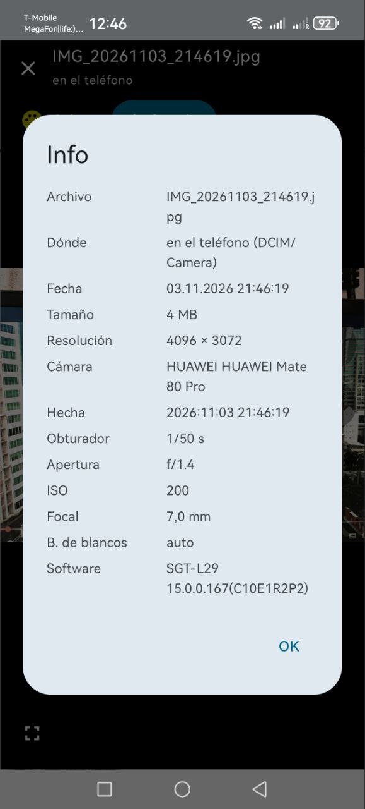
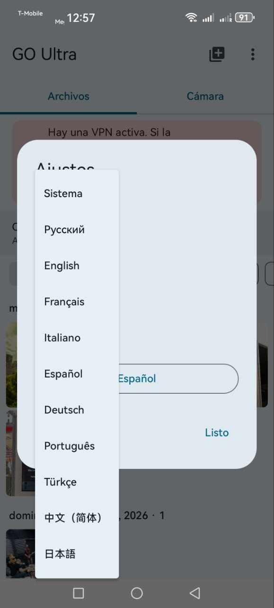

Edit entire projects on your phone
Соберите весь ролик на телефоне
A gig from several angles, a clip cut to music or a travel video from your gallery. Start with local videos, photos and audio. The project editor works without a connected camera.
Концерт с нескольких ракурсов, клип под музыку или ролик из поездки. Добавьте видео, фото и звук с телефона. Для работы с проектом подключать камеру не нужно.
Multicam sync by sound
Мультикам по звуку
Use a song or the sound from a video as the reference. The editor searches the entire recording for matching sections, including either side of a passage missing from one version. Add the matched sections, keep a take whole, or use unrelated footage as cutaways.
Возьмите за основу песню или звук из видео. Редактор ищет совпадения по всей записи, в том числе до и после пропущенного в одной версии проигрыша. Добавьте найденные части, оставьте дубль целиком или используйте видео с другим звуком как перебивку.
Refine a multicam edit
Правка мультикам-монтажа
See each angle's waveform and listen to its own sound. Hold and drag a section to line it up, add or move a cut, or switch the camera inside an existing shot. Move the finished group together with its reference audio.
Смотрите волны ракурсов и слушайте их собственный звук. Удерживайте часть, чтобы сдвинуть её по волне. Добавляйте и двигайте склейки, меняйте камеру внутри готового плана. Перемещайте группу вместе с опорным звуком.
Beats, tempo and musical accents
Бит, темп и музыкальные акценты
Find the beat in each audio file, see the current BPM, and listen to the grid with a metronome. Use a fixed tempo and shift the grid when needed. Analyse dynamics or musical structure to find accents, then adjust the markers on the timeline.
Находите бит отдельно в каждом файле, смотрите текущий BPM и слушайте сетку с метрономом. При необходимости задайте постоянный темп и сдвиньте сетку. Ищите акценты по динамике или структуре музыки и правьте метки на таймлайне.
Automatic montage you can edit
Автомонтаж с ручной правкой
Build a first cut using beats and musical accents, then refine the shots yourself. Trim and split clips, mix multiple audio files with fades and crossfades, and use the edit history to undo or redo changes.
Соберите черновик по битам и музыкальным акцентам, затем поправьте планы вручную. Обрезайте и делите клипы, сводите несколько аудиофайлов с плавными переходами, отменяйте и возвращайте правки через историю.
What you can make
Что можно смонтировать
Concert or live session
Концерт или лайв-сессия
Combine a wide shot of the stage, a phone close-up and a recording from the sound desk. Sync the angles, build a first cut on your phone, then choose which camera shows the solo or the audience.
Совместите общий план сцены, крупный план с телефона и запись с пульта. Соберите черновой монтаж прямо на телефоне, затем выберите ракурс для соло и добавьте кадры зала.
Talk, recital or dance performance
Доклад, спектакль или танцевальный номер
Keep one angle wide and use another for close-ups. Sync recordings of the same performance by sound, keep a reference track for consistent audio and switch angles within the edit.
Оставьте одну камеру на общем плане, второй снимайте детали. Совместите записи одного выступления по звуку, оставьте опорную дорожку и меняйте ракурс внутри монтажа.
Music video, travel or sports recap
Музыкальный клип, поездка или спортивная нарезка
Pick highlights from the gallery, add a soundtrack and let automatic montage find cut points in the music. Keep the shots you like and adjust cuts around the strongest moments.
Выберите лучшие моменты из галереи, добавьте музыку и запустите автомонтаж по битам и акцентам. Оставьте удачные планы и поправьте склейки в ключевых местах.
Why it stands out
Чем выделяется
Editing without downloading the whole clip
Монтаж без перекачивания всего файла
Cut 20 seconds out of the middle of a 30 GB clip: the app reads only those bytes from the camera over Wi-Fi and saves the piece straight to the gallery — the whole file never lands on the phone. Several pieces can be joined into one clip, saved as shot without re-encoding.
Вырезать 20 секунд из середины 30-гигабайтного ролика: приложение читает с камеры только нужные байты и сразу сохраняет кусок в галерею — целиком файл в телефон не попадает. Несколько кусков склеиваются в один клип и сохраняются без перекодирования.
Colour like in the movies
Цвет «как в кино»
Film-look presets, I-Log → Rec.709 applied on the fly in the viewer, exposure, saturation and sharpness — graded live and baked into the saved copy.
Плёночные пресеты, I-Log → Rec.709 на лету в просмотре, экспозиция, насыщенность и резкость — цветокор в реальном времени, при сохранении запекается в файл.
Tiny next to the official app
Крошечный рядом с официальным
The APK is about 6 MB. No account, ads, cloud, or Google Play Services required.
APK занимает около 6 МБ. Без аккаунта, рекламы, облака и сервисов Google Play.
What it does
Что умеет
One-button connection
Подключение одной кнопкой
Wakes the camera over Bluetooth — even a switched-off one — and joins its Wi-Fi by itself.
Будит камеру по Bluetooth, даже выключенную, и сам подключается к её Wi-Fi.
Files and downloads
Файлы и скачивание
Previews, view straight from the camera, background download to the gallery with resume, no duplicates.
Превью, просмотр прямо с камеры, скачивание в галерею в фоне с докачкой, без дублей.
Live photos
Живые фото
Saved as Android Motion Photo with the original clip kept inside; pick any frame as the cover.
Сохраняются как Android Motion Photo с исходным роликом внутри; любой кадр можно сделать обложкой.
Shooting and live view
Съёмка и трансляция
Record and take photos from the phone, live preview, all of the camera's settings for its 12 modes.
Запись и фото с телефона, трансляция, все настройки камеры для её 12 режимов.
Highlights and clips
Отметки и клипы
Shows the camera's highlight marks, edits the pieces on a timeline and saves them as one clip without re-encoding.
Показывает отметки камеры, правит куски на временной шкале и сохраняет их одним клипом без перекодирования.
Colour
Цвет
I-Log → Rec.709, exposure, saturation, sharpness and film looks for videos, photos and live photos.
I-Log → Rec.709, экспозиция, насыщенность, резкость и плёночные стили для видео, фото и живых фото.
Alpha: other Insta360 cameras
Альфа: другие камеры Insta360
Experimental. The universal build can also pull files off other
Insta360 cameras — the ones this app was not built around. The camera's Wi-Fi is joined by hand: switch the camera
on, connect to its …OSC access point in the phone's Wi-Fi settings (the password is usually
88888888) and open menu ⋮ → “Another camera (alpha)…”. The app finds the camera,
shows its files and downloads them into DCIM/Camera.
Экспериментально. Сборка universal умеет забирать файлы и с других
камер Insta360 — тех, вокруг которых приложение не строилось. Wi-Fi камеры подключается вручную: включите
камеру, подключитесь к её точке доступа …OSC в настройках Wi-Fi телефона (пароль обычно
88888888) и откройте меню ⋮ → «Другая камера (альфа)…». Приложение найдёт
камеру, покажет её файлы и скачает их в DCIM/Camera.
- Models with the OSC API: X3, X4, X5, ONE X2/X3, ONE RS, Ace, Ace Pro and other X/ONE-series cameras — not tried on real X-series hardware yet, so a camera-profile report from owners is what confirms and adds a model.
- GO 2 / GO 3 / GO 3S: a separate experimental entry in the setup wizard — join the camera's Wi-Fi and tap “Connect”; the app picks up that network and continues as with the GO Ultra. A tester with such a camera would help.
- Read-only: the alpha never changes camera settings and never deletes files;
.insv(360) is saved as it is — open it in Insta360 Studio. - How it works and how to send a camera profile:
docs/ALPHA-OTHER-CAMERAS.md. The alpha APK: v0.17-alpha5 (a pre-release — the big “Download the APK” button above points to the stable build).
- Модели с API OSC: X3, X4, X5, ONE X2/X3, ONE RS, Ace, Ace Pro и другие камеры X/ONE-серий — на живом железе X-серии ещё не проверялось, поэтому модель подтверждает и добавляет отчёт «профиль камеры» от владельца.
- GO 2 / GO 3 / GO 3S: отдельный экспериментальный пункт в мастере первого запуска — подключитесь к Wi-Fi камеры и нажмите «Подключиться»: приложение подхватит эту сеть и дальше работает как с GO Ultra. Нужен тестер с такой камерой.
- Только чтение: альфа ничего не настраивает в камере и никогда не удаляет файлы;
.insv(360) сохраняется как есть — откройте его в Insta360 Studio. - Как это работает и как прислать профиль:
docs/ALPHA-OTHER-CAMERAS.md. APK альфы: v0.17-alpha5 (pre-release — большая кнопка «Скачать APK» выше ведёт на стабильную сборку).
Screenshots
Скриншоты








Getting started
Как начать
To edit local files, open Projects or add media from Files. Follow the pairing steps below to control a GO Ultra or work with files on the camera.
Для монтажа с телефона откройте «Проекты» или добавьте материалы через «Файлы». Следующие шаги нужны для управления GO Ultra и работы с файлами на камере.
- Download the APK from Releases and install it (you may need to allow installs from unknown sources).
- Switch the camera on with its button and put it next to the phone.
- Confirm the pairing — Android shows the request as a notification in the shade.
- Confirm the connection on the camera's screen.
After that you do not need to switch the camera on — the app wakes it itself.
- Скачайте APK из раздела Releases и установите его (может понадобиться разрешить установку из неизвестных источников).
- Включите камеру кнопкой и положите рядом с телефоном.
- Подтвердите сопряжение — Android показывает запрос уведомлением в шторке.
- Подтвердите подключение на экране камеры.
Дальше включать камеру не нужно — приложение будит её само.
Requirements
Требования
- Android 10 or newer; no Google Play Services needed.
- For camera features: Insta360 GO Ultra, tested with firmware v1.9.29.
- A VPN on the phone can block the camera's Wi-Fi — switch it off or exclude the app.
- Android 10 или новее; сервисы Google не нужны.
- Для функций камеры нужна Insta360 GO Ultra, проверено с прошивкой v1.9.29.
- VPN на телефоне может мешать Wi-Fi камеры — отключите его или добавьте приложение в исключения.
Languages
Языки интерфейса
Русский · English · Français · Italiano · Español · Deutsch · Português · Türkçe · 中文（简体）· 日本語
For developers
Разработчикам
The camera's protocol (Bluetooth, TCP 6666, HTTP) was reverse-engineered; the notes are in
docs/PROTOCOL.md.
The app is MIT-licensed.
Протокол камеры (Bluetooth, TCP 6666, HTTP) восстановлен обратной разработкой; заметки —
в docs/PROTOCOL.md.
Лицензия приложения — MIT.